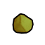
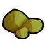
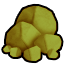

原料级·原始·方铅矿Anglesite
不可塑形建造/打造时选不到这种材质;仅作配方原料(被 7 条配方消耗)
① 起点 · Core_SK 的 Defs 写 Things/Item/Ores/Anglesite (165,185,70)



② Vile 换成 Things/Item/Ores/Magnetite (137,124,121) ← Resource_Ores_Patch.xml


③ 生效(终态) Things/Item/Ores/Anglesite (165,185,70) ← 10_Vile贴图还原.xml


Things/Item/Ores/Anglesite StackCount (165,185,70)(165,185,70)被7条配方消耗贴图链 3 段
护甲 —/—/— 利钝 0.40/1.60 价值 4 质量 0.30 Bulk 0.30
stuff —
HSK HVY
产自 采掘方铅矿 x5(矿井/Mining II)
源 Core_SK
Items_Resource_Ore.xml